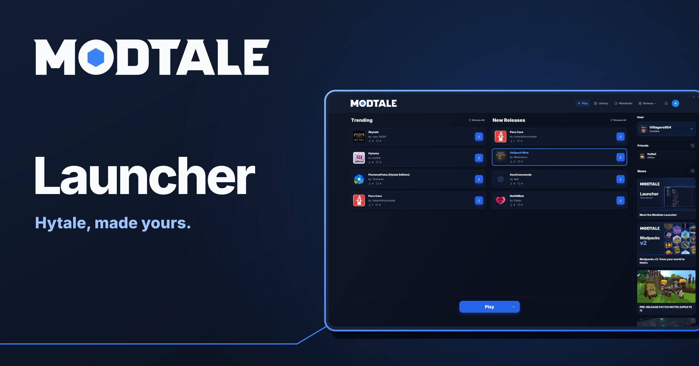

Meet the Modtale Launcher
A native home for your Hytale projects, worlds, and next adventure.

Your next Hytale world starts before you press Play. It starts with the mod that catches your eye, the setup you want to try, and the friends you want to bring along.
Meet the Modtale Launcher: a native desktop home for discovering projects, managing your worlds, and making Hytale your own. The catalog, your installed mods, and the game’s launch flow now live together.
From finding a mod to your next world
Modtale now has a place on your desktop. The launcher brings project browsing, installation, your local library, and Hytale’s launch flow into one app. You can read about a project, look through its releases and changelog, and install it without manually moving between a browser and your mods folder.
The context matters as much as the download. Project descriptions, documentation, comments, and release information stay close at hand, so you can find out what a mod does—and what it needs—before adding it to your setup.
Your worlds don’t all need the same mods
Your long-running survival world and the creative world where you try things out probably have different needs. The launcher’s library lets you manage which mods are enabled for each world. After an install, you can choose where to enable the new additions instead of treating every world as the same setup.
You still get a central place to see installed projects and manage updates. The difference is that you can keep a world’s mod selection intentional: try something in one place, leave another world’s combination alone, and see what belongs where.
The launcher uses your linked Hytale account for the game’s official authentication. A Modtale account is optional for browsing and installing projects. Sign in for account features such as favorites, notifications, and sharing mod lists. Your Modtale account and your Hytale account serve different purposes: launching the game uses Hytale’s official authentication.
More of the mods you love
A great world can draw from more than one community. You can now browse CurseForge’s Hytale catalog inside the Modtale Launcher, alongside the projects you already know here. Switch the catalog selector to CurseForge to explore its most-downloaded mods, recent updates, and new releases.
Open a project to read its description, check its releases, and download it through the same familiar flow. Its source stays visible, and the installed mod joins your local library, where you choose the worlds it belongs in. Finding something on another platform doesn’t have to mean maintaining another mods folder.
A home for the everyday details
The Play screen puts your game installation, launch options, and Modtale discoveries together. The library gives installed projects their own version controls, so checking for updates and looking through available releases happen where you already manage your worlds.
Supported mod configs are accessible from the library, with the mod and world they belong to kept in view. You can inspect a world’s setup before changing it instead of working backward from an unfamiliar filename.
And when a combination clicks, the library can become the starting point for sharing it. Shared lists, configs, and turning a setup into a maintained pack have their own modpacks v2 announcement.
Your setup, ready to follow you
Getting a setup right takes time. Signing in with Modtale lets you keep launcher preferences, your Modtale project installs, and supported configs with your account, ready to bring onto another computer.
When the account’s saved setup differs from this device, the launcher shows both before you choose. Load the saved setup from Modtale, or keep this device’s setup as the one your account remembers. Existing configs are backed up before replacement, and installation paths stay specific to each computer.
Your world saves stay on your device, including their terrain and progress; the synced project list currently covers Modtale installs.
And a little more you
We couldn’t bring Modtale to the desktop without leaving room for some personality. The launcher’s Wardrobe lets you browse the cosmetic catalog from your installed game, put a look together, and see it on a native 3D character preview.
Grouped cosmetic categories bring the part you’re editing into focus. There’s support for color and style choices, animation previews, and undo and redo. Keep local saved looks, or browse HyTags skins and collections for another starting point.
Owned cosmetics are distinguished from preview-only items. When you apply an outfit, the previous official look is saved under Previous looks, giving you a way back if yesterday’s style turns out to be the one you prefer.
Make room for your next adventure
Whether you’re keeping a familiar world running or assembling something completely new, the launcher gives the small jobs around playing a place to belong. Discover a project, choose its place in your worlds, and spend more time with the setup you came to play.
The launcher has packages for Windows, macOS, and Linux. Visit the launcher page for the available downloads. For the other part of this update, read Modpacks v2: from your world to theirs.
Tell us what you’re building, and what you’d like to see next, on Discord.
See you in the next world.
— The Modtale team